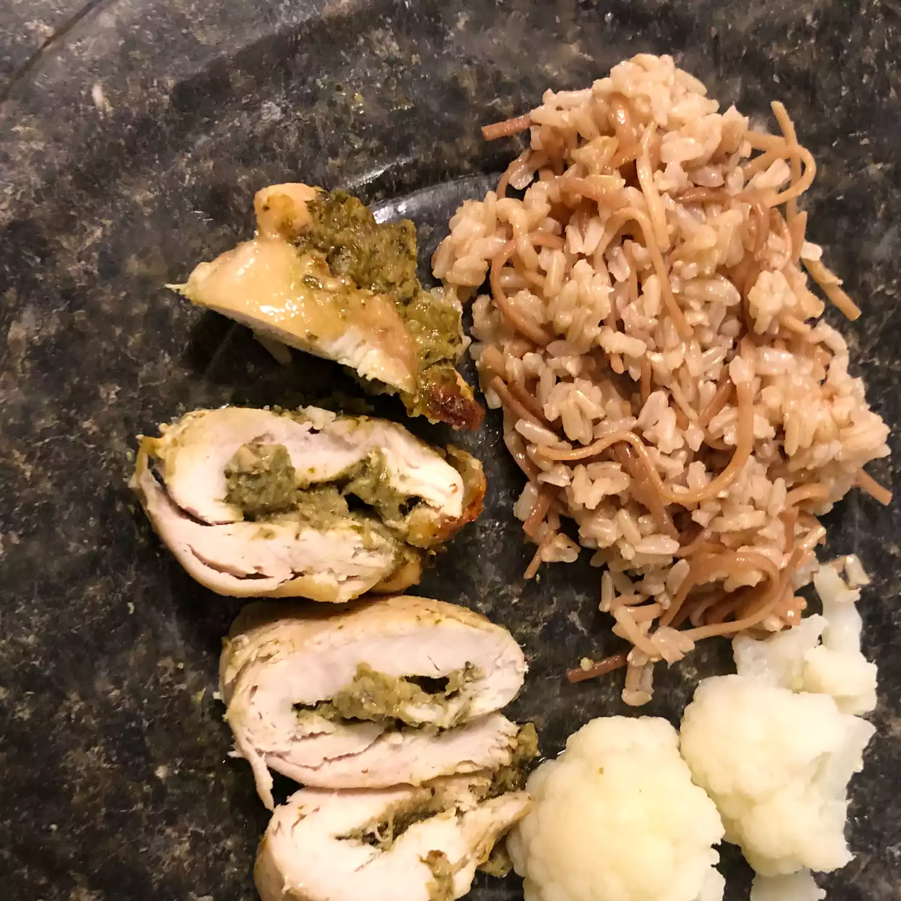

Pesto Cheesy Chicken Rolls
Home

Description
This is a very simple yet exciting dish your family will love. It's something different from your average chicken recipe.
Ingredients
- 4 skinless, boneless chicken breast halves - pounded to 1/4 inch thickness
- 1 cup prepared basil pesto
- 4 thick slices mozzarella cheese
- cooking spray
Steps
- Preheat the oven to 350 degrees F (175 degrees C). Spray a baking dish with cooking spray.
- Spread 2 to 3 tablespoons of the pesto sauce onto each flattened chicken breast. Place one slice of cheese over the pesto. Roll up tightly, and secure with toothpicks. Place in a lightly greased baking dish.
- Bake uncovered for 45 to 50 minutes in the preheated oven, until chicken is nicely browned and juices run clear.
Home